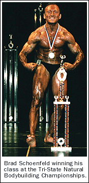
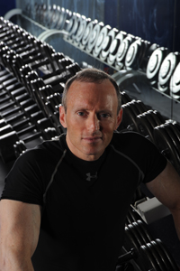

Brad Schoenfeld, PhD, CSCS, CSPS, FNSCA
Brad Schoenfeld, PhD, CSCS, CSPS, FNSCA, is an internationally renowned fitness expert and widely regarded as one of the leading authorities on body composition training (muscle development and fat loss). He is a lifetime drug-free bodybuilder, and has won numerous natural bodybuilding titles.
Brad earned his masters degree in kinesiology/exercise science from the University of Texas at Permian Basin and his PhD at Rocky Mountain University where his dissertation focused on elucidating the mechanisms of muscle hypertrophy and their application to resistance training. He has published over 300 peer-reviewed research articles on exercise and sports nutrition, as well as editing multiple textbooks and authoring several textbook chapters. He acts as the Assistant Editor-in-Chief for the NSCA's Strength and Conditioning Journal, as well as serving on the editorial advisory board for numerous peer-reviewed exercise- and nutrition-related journals.
Brad is widely regarded as a "trainer of trainers." He is a tenured full professor in the Health Sciences Department at Lehman College in the Bronx, NY, and serves as the Graduate Director of the Human Performance and Fitness program. Moreover, he is a dedicated mentor to young sports scientists, and has served as a chair or member on more than a dozen thesis and dissertation committees.
Brad is a best-selling author of multiple fitness books including The M.A.X. Muscle Plan 2.0 (Human Kinetics, 2021), which has been widely referred to as the "muscle-building bible," and Strong and Sculpted (Human Kinetics, 2016), which details a cutting-edge body sculpting program targeted to women. Brad also has authored the seminal textbook Science and Development of Muscle Hypertrophy (Human Kinetics, 2020), the first text devoted to an evidence-based elucidation of the mechanisms and strategies for optimizing muscle growth. In total, Brad's books have sold over a half-million copies.
Brad has been published or appeared in such consumer publications as Shape, Self, Fitness, Ladies Home Journal, Redbook, Cosmopolitan, Marie Claire, Woman's Day, Fit, The New York Times, New York Daily News, Gannett Suburban Papers, The Washington Post, Chicago Tribune, Oxygen, Musclemag, Ironman, Muscle and Fitness Hers, and many, many others. He formerly served as a columnist for Muscular Development and Fitness Rx magazines, as well as the Bodybuilding.com website. He serves on the editorial board for Men's Health Magazine and is one of the most quoted experts in the fitness industry. He has been an on-air fitness expert for News 12 (Westchester, NY) and has appeared on over a hundred television shows including FOX Newschannel, CNN Headline News, CBS Evening News, UPN News, Good Day New York, Good Day LA, CBS New York Live, NBC Live at Five, and Today in New York, as well as hundreds of radio programs across the United States.

Brad has consulted with numerous college and professional strength and conditioning programs including the Oklahoma Thunder, Sacramento Kings, North Carolina State University, Leicester Tigers Rugby Club, and England Rugby U20. He formerly served as the Sports Nutritionist for the New Jersey Devils hockey organization. He currently serves on on the scientific advisory board for Tonal Corporation, a leading manufacturer of home exercise equipment.
Brad is a popular lecturer on both the professional and consumer level, having presented seminars and workshops in over 30 different countries across five continents. Professionally, he has lectured for the International Health, Racquet and Sportsclub Association (IHRSA), National Strength and Conditioning Association (NSCA), American College of Sports Medicine (ACSM), CanFitPro, Athletic Business Conference, Club Industry, International Society of Sports Nutrition (ISSN), and Academy of Nutrition and Dietetics (AND), among others.
Brad is a Certified Strength and Conditioning Specialist and has been certified as a personal trainer by the NSCA, ACSM, ACE, AFAA, and CanFitPro. He previously served two terms as a member of the board of directors for the NSCA and was recognized with the distinction of fellowship by the organization. Brad is the recipient of multiple awards including NSCA Personal Trainer of the Year, NSCA Young Investigator of the Year, the Rocky Mountain University Outstanding Alumni Award, and the Dwight D. Eisenhower Fitness Award, presented by the United States Sports Academy for outstanding achievement in fitness and contributions to the growth and development of sport fitness through outstanding leadership activity. His efforts in the field have resulted in being named one of the 100 most influential people in health and fitness.
Brad is available for expert training, consulting, speaking, and freelance writing on all fitness related matters. You can follow him on Instagram, Twitter, and Facebook